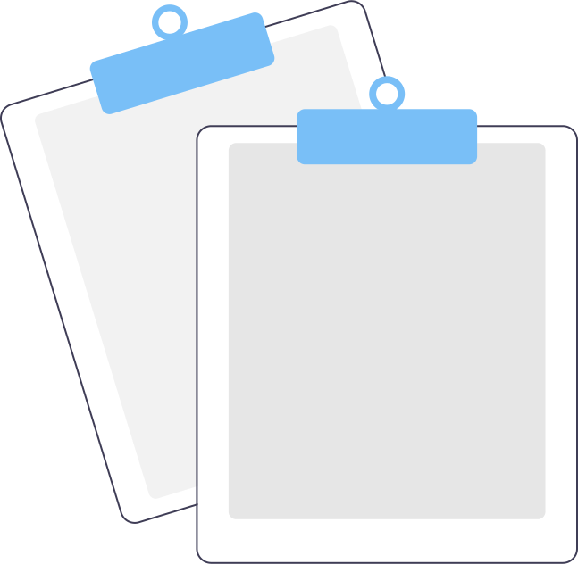

<div *ngIf="cardDataG?.length > 0; else other_content">
  <ion-card *ngFor="let valueglucose of cardDataG">
    <ion-card-content>
      <ion-label color="medium" position="stacked">Nivel de glucosa:</ion-label>
      <div class="center">
        <ion-badge [color]="color(valueglucose.nivel_glusemia)">
          <h1>{{valueglucose.nivel_glusemia + " " +'mg/dL'}}</h1>
        </ion-badge>
      </div>
      <div class="center">
        {{placeholder(valueglucose.nivel_glusemia)}}
      </div>
        <ion-item>
          <ion-label color="medium">Hora:</ion-label>
          {{valueglucose.hora | date:' HH:mm' }}
        </ion-item>
      <ion-item>
        <ion-label color="medium">Fecha:</ion-label>
        {{valueglucose.fecha | date:'dd-MM-yyyy'}}
      </ion-item>
      <ion-item>
        <ion-label color="medium">Periodo:</ion-label>
        {{valueglucose.comida}}
      </ion-item>
    </ion-card-content>
    </ion-card>
</div>
<ng-template #other_content>
  <h1 class="center">
    
    <br>Sin registros</h1>
</ng-template>

